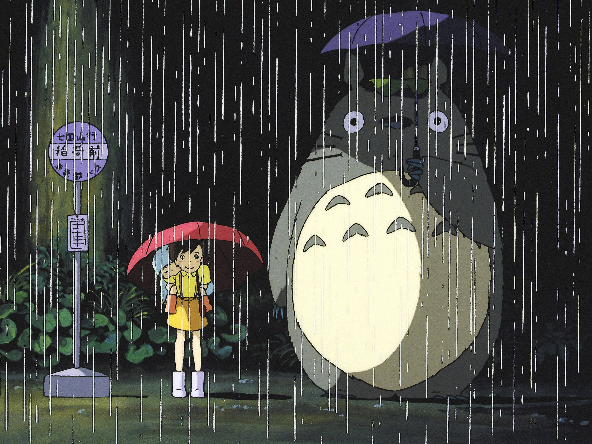

Studio Ghibli!!!
by Aaron Lim, Evelyn Liu, Faith Qiao
Index
Idk the movie name
Movies and films have been a major part of American culture for more than a century. People often go to movie theaters during breaks or for events, watch movies at home to relax after a long day, relish in shorter films to fill in spare amounts of time — the film industry has made its way into various aspects of American culture and lives. However, this line has not been unproblematic. The film industry has been famously sexist in almost all film-based careers. Female directors and screenwriters typically have less opportunities than their male counterparts. As of 2020, only 4.1% of Hollywood directors and 8% of screenwriters identified as female. In terms of acting opportunities, females are provided less lead roles than males and are three times more likely to get sexualized. Clearly, there is a large discrepancy between male and female treatment; despite the increase in female rights and the fourth-wave feminist movement in 2012, women do not receive equal management. Besides being sexist, the film industry previously excluded LGBTQ persons from larger films. Formed in 1929 and still often followed today, the Hays Code is a set of commonly accepted and conservative rules. One of such guidelines heavily discouraged LGBTQ depictions and as of 2010, only 2% of large scale productions openly displayed queer scenes.